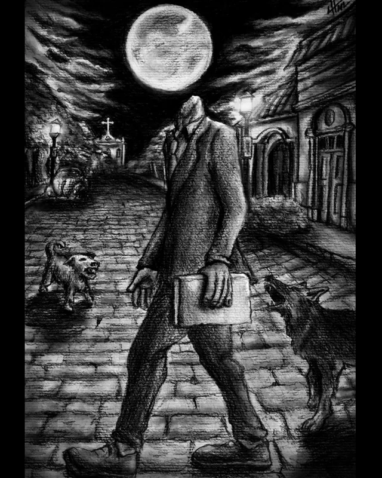

Grafite · Lápis · Fotografia
Desenhos sobre o que não cabe em palavras.
Figuras, sombras e silêncios entre o figurativo e o abstrato.

Livro FechadoObras

Sobre
Um traço para cada inquietação.
Sou um artista visual que explora emoções humanas por meio do grafite, do lápis e da fotografia. Cada obra é um fragmento de sentimentos, inquietações e experiências que ganham forma em traços, sombras e luz.
Meu trabalho transita entre o figurativo e o abstrato, buscando provocar reflexão e despertar sensações em quem observa.
Prints e encomendas
Leve uma obra para casa.
Reproduções em papel de qualidade ou um desenho feito sob encomenda.
Contato
Vamos conversar.
Encomendas, exposições, parcerias ou só uma conversa sobre arte.